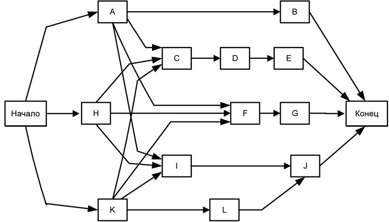
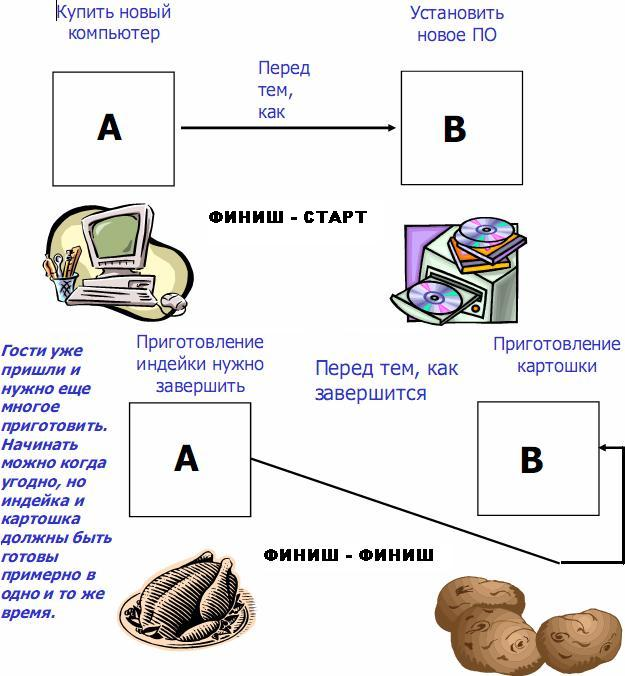
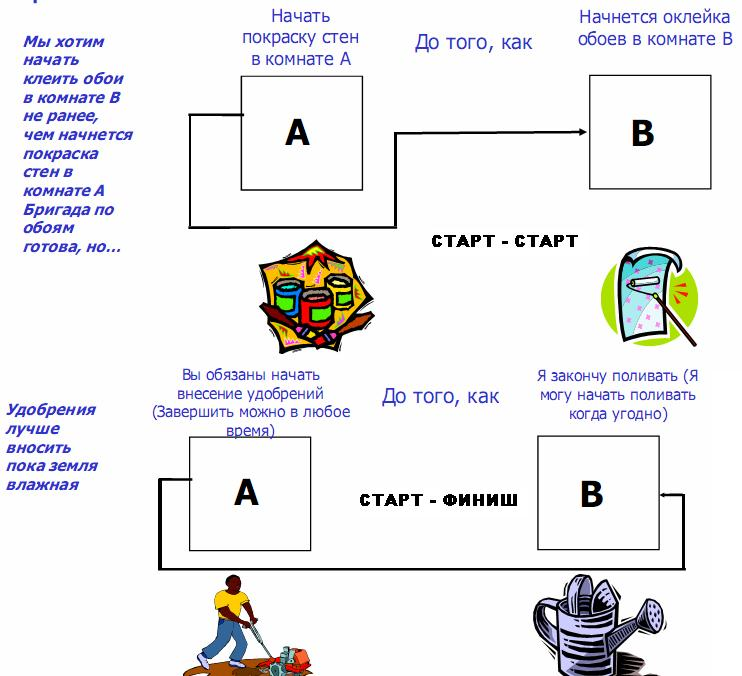
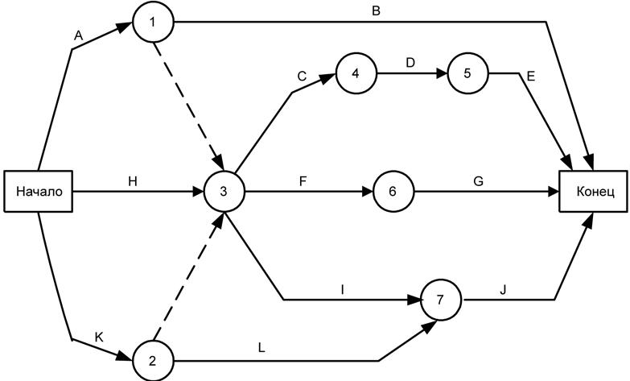

Определение взаимосвязей операций (п.6.2, рис.8.1)
6.2.1 Определение взаимосвязей операций: входы
Определение взаимосвязей операций - выявление и документирование зависимостей между плановыми операциями.
6.2.1.1 Описание содержания проекта описание содержания проекта (п. 5.2.3.1, рис.7.1) содержит определение содержания продукта, включающее в себя характеристики продукта, которые часто могут повлиять на определение взаимосвязей операций, такие как схема расположения строящегося завода или подсистемные интерфейсы в проекте по созданию программного обеспечения. Хотя подобные влияния часто очевидны
из списка операций, тем не менее, во избежание ошибок следует повторно проанализировать определение содержания продукта.
6.2.1.2 Список операций описан в п. 6.1.3.1, рис.8.1
6.2.1.3 Параметры операций описаны в п. 6.1.3.2, рис.8.1.
6.2.1.4 Список контрольных событий описан в п. 6.1.3.3, рис.8.1.
6.2.1.5 Одобренные запросы на изменение описаны в п. 4.4.1.4., рис.6.1.
6.2.2 Определение взаимосвязей операций: Инструменты и Методы
6.2.2.1 Метод предшествования - это метод построения сетевых диаграмм расписания проекта, в котором операции изображаются в виде прямоугольников (называемых "узлами"), а зависимости - соединяющими их дугами (рис.8.3). На рис. 8.3 показана простая сетевая диаграмма расписания проекта, составленная при помощи метода предшествования. Этот метод еще называется "операции в узлах"; он используется в большинстве пакетов программного обеспечения для управления проектами.

Рисунок 8.3 - Метод "операции в узлах" (12 операций, 23 логические зависимости)
В этом методе существует четыре типа зависимостей (или отношений предшествования):
- Финиш-старт. Инициация последующей операции зависит от завершения предшествующей операции (работа В не может стартовать до завершения работы А), наиболее употребляемая зависимость.
- Финиш-финиш. Завершение последующей операции зависит от завершения предшествующей операции (работа В не может завершиться, пока не завершится работа А).
- Старт-старт. Инициация последующей операции зависит от инициации предшествующей операции (работа В не может начаться, пока не начнётся работа А).
- Старт-финиш. Завершение последующей операции зависит от инициации предшествующей операции. Работа В не может завершиться, пока не начнётся работа А. Используется иногда..
В методе предшествования чаще всего используется отношение предшествования типа "финиш-старт". Отношения "старт-финиш" используются редко.

Рисунок 8.4 - Зависимости типа "финиш - старт", "финиш - финиш"

Рисунок 8.5 - Зависимости типа "старт - финиш", "старт - старт"
6.2.2.2 Метод стрелочных диаграмм - это метод построения сетевых диаграмм расписания проекта, в котором операции представляются в виде дуг, которые соединяются в узлах, показывающих их зависимости. На рис. 8.6 показана простая логическая сетевая диаграмма, построенная при помощи метода стрелочных диаграмм. Этот метод еще называется "операции на дугах"; несмотря на то что он реже используется, чем метод предшествования, он до сих пор используется в преподавании теории сетевых расписаний, а также в некоторых отдельных областях приложения.
В методе стрелочных диаграмм используются только зависимости "финиш-старт"; иногда для правильного отображения всех логических взаимосвязей проекта приходится прибегать к "фиктивным" отношениям, которые называются фиктивными операциями (на рисунке показаныпунктиром). Поскольку фиктивные операции не являются действительными плановыми операциями (в них нет содержания работ), им в целях анализа сети расписания присваивается нулевая длительность. К примеру, на рис. 8.6 плановая операция "F" зависит от завершения плановых операций "A" и "K" помимо завершения плановой операции "H".

Рисунок 8.6 - Метод стрелочных диаграмм (12 операций и 2 фиктивные)
6.2.3 Определение взаимосвязей операций: Выходы
6.2.3.1 Сетевые диаграммы расписания проекта - это схематическое отображение плановых операций проекта и логических взаимосвязей (их также называют "зависимости") между ними. На рисунках 8.3 и 8.6 показаны два различных варианта построения сетевой диаграммы расписания проекта. Сетевая диаграмма расписания проекта может быть построена вручную или при помощи программного обеспечения для управления проектом. Она может включать в себя полную детализацию проекта или одну или несколько суммарных операций. Диаграмму сопровождает обобщенное описание основных подходов, использованных при выстраивании последовательности операций. Все нестандартные последовательности операций в сети описываются полностью в тексте.
6.2.3.2 Список операций (обновления). Если одобренные запросы на изменения (п. 4.4.1.4, рис.6.1) являются результатом процесса определения взаимосвязей операций, то создается обновленный список операций (п. 6.1.3.1, рис.8.1), включающий в себя эти изменения.
6.2.3.3 Параметры операции (обновления). При обновлении параметров операции (п. 6.1.3.2, рис.8.1) в них включаются сформулированные логические взаимосвязи и соответствующие опережения и задержки. Если одобренные запросы на изменения (п. 4.4.1.4, рис. 6.1), являющиеся результатом процесса определения взаимосвязей между операциями, оказывают влияние на список операций, то в соответствующие элементы параметров операций включаются эти одобренные изменения.
6.2.3.4 Запрошенные изменения. При разработке логических взаимосвязей, опережений и задержек проекта могут быть выявлены моменты, которые повлекут за собой запрос на изменение (п. 4.4.1.4, рис. 6.1) списка операций или параметров операций. Примерами таких изменений могут быть случаи, когда плановая операция разделяется на несколько операций или переопределяется, когда уточняются зависимости или когда опережение или задержка корректируются, чтобы они точнее отражали существующие логические взаимосвязи в проекте. Запрошенные изменения рассматриваются и утверждаются в рамках процесса общего управления изменениями (п. 4.6, рис. 6.1).